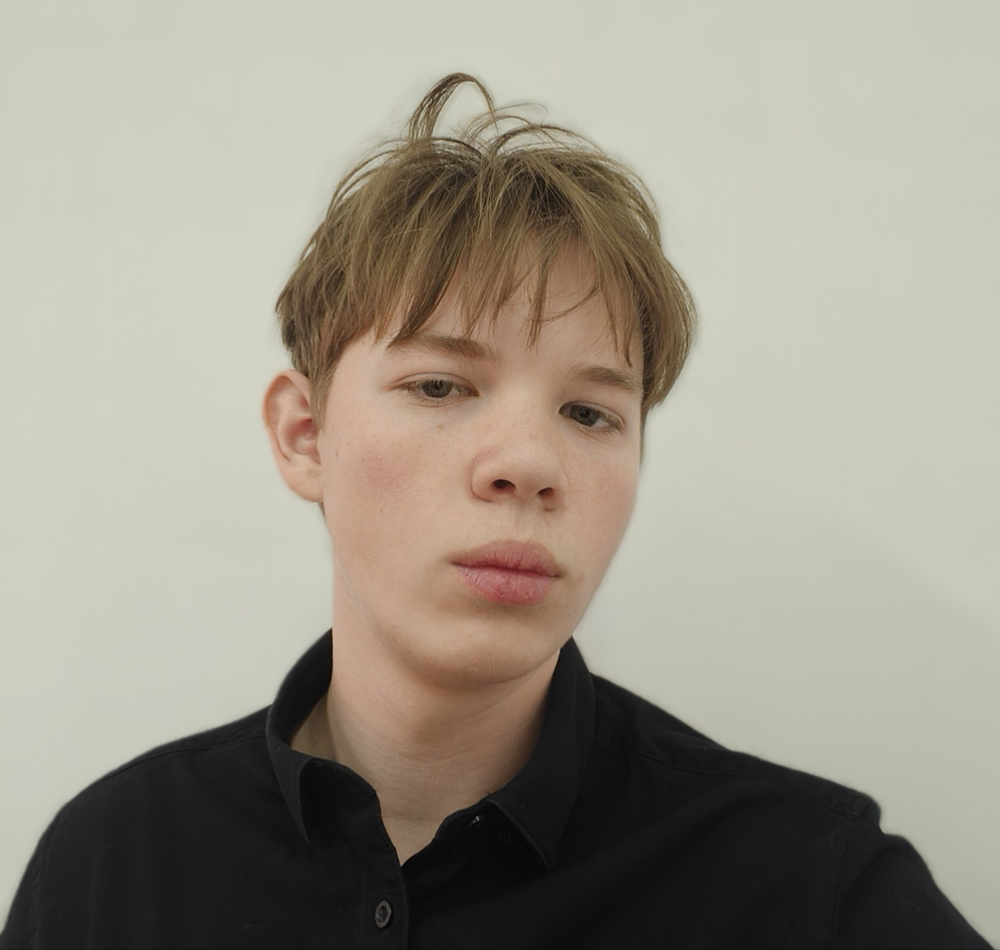
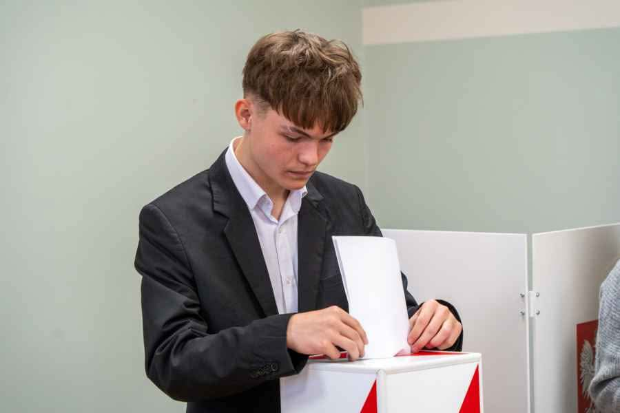
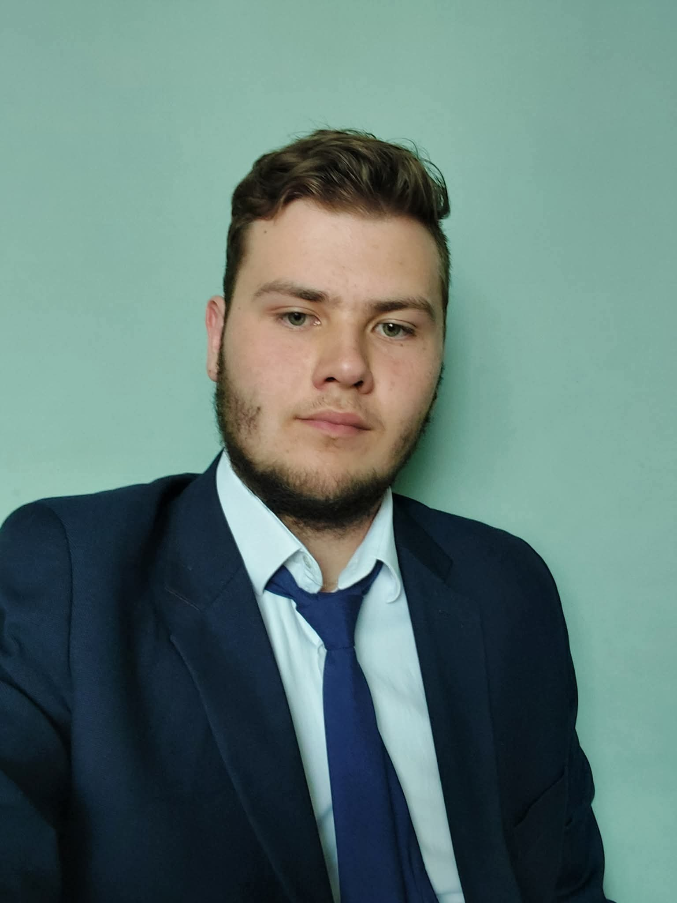

Założenia partii
PKON popiera rozbudowane programy socjalne, między innymi darmowe kakałko w szkołach, szpitalach i urzędach oraz dodatki dla seniorów.
Fikcyjna partia polityczna
„Bo silny naród, zaczyna się od silnego śniadania.”
PKON opiera swoje poglądy na idei silnego państwa, które dba o dobro obywateli i promuje narodową kulturę kakałkową. Łączymy patriotyzm z polityką społeczną, podkreślając znaczenie wspólnoty, tradycji i codziennych rytuałów, takich jak wspólne picie kakałka.
PKON popiera rozbudowane programy socjalne, między innymi darmowe kakałko w szkołach, szpitalach i urzędach oraz dodatki dla seniorów.
Wspieramy małe rodzinne przedsiębiorstwa, lokalne manufaktury i młodych przedsiębiorców poprzez ulgi podatkowe oraz dotacje.
Nasze priorytety są proste, czytelne i nastawione na dobro wspólne.
Każdy obywatel ma prawo do ciepłego kakałka rano. Państwo utrzymuje strategiczne rezerwy kakao. Powstaje Ministerstwo Kakałka i Spraw Przyjemnych.
Podkreślamy znaczenie tradycji oraz wspólnych rytuałów budujących więzi społeczne. Wieczorne picie kakałka wzmacnia relacje rodzinne i poczucie wspólnoty.
Popieramy niskie podatki i rozwój lokalnych przedsiębiorstw związanych z kulturą kakałkową. Zerowy VAT na kakałko i ulgi dla producentów pianek pobudzą gospodarkę.
Wspieramy lokalnych producentów kubków i akcesoriów kakałkowych. Program „Kakao Start+” pomaga młodym przedsiębiorcom rozwijać własne biznesy.
Promujemy polskie produkty kakałkowe jako symbol narodowej dumy i jakości. Chcemy uczynić Polskę europejskim centrum kultury kakałkowej.
Każdy obywatel powinien mieć równy dostęp do ciepłego kakałka. Programy społeczne wzmacniają solidarność i zostawiają nikogo bez wsparcia i pianki.
Powołujemy Centralne Biuro Kakałkowe, które dba o bezpieczeństwo rynku i zwalcza nielegalny obrót gorzką kawą. Ochrona jakości to podstawa.
Wprowadzamy przedmioty szkolne związane z historią i kulturą kakałka. Nauka prawidłowego mieszania i wiedzy o piankach rozwija praktyczne umiejętności.
Zapowiadamy pełną przejrzystość życia publicznego. Zakaz przyjmowania łapówek w postaci gorzkiej czekolady to symbol uczciwości polityków.
Relacje ze spotkań w miastach i miasteczkach, gdzie rozmawiamy z mieszkańcami.
Rozmowy o porannych rytuałach i roli kakałka w budowaniu wspólnoty. Wspólnie przygotowaliśmy mapę potrzeb stołecznych dzielnic.
Wspólnie z mieszkańcami omówiliśmy program „Kakao Start+” i wsparcie dla lokalnych manufaktur. Padło wiele konkretnych pomysłów.
Dyskusja o solidarności społecznej i dodatkach dla seniorów. Zebraliśmy propozycje dotyczące dostępności darmowego kakałka.
Tematem były ulgi podatkowe i rozwój rodzinnych kawiarni. Mieszkańcy wskazali, jak uprościć procedury wsparcia.
Rozmawialiśmy o edukacji kakałkowej w szkołach i nowych przedmiotach. Wnioski posłużą do dalszych prac programowych.
Pięcioro członków założycieli PKON. Miejsce na zdjęcia zostanie uzupełnione.
Koordynacja programu społecznego i spotkań lokalnych.

Kontakt z regionami i prowadzenie konsultacji obywatelskich.

Rozwój inicjatyw gospodarczych oraz wsparcie przedsiębiorczości.

Strategia komunikacji i promocja kultury kakałkowej.
Bezpieczeństwo rynku i inicjatywy edukacyjne.
Jesteśmy otwarci na dialog i wspólne budowanie kultury kakałkowej. Do zobaczenia na kolejnych spotkaniach.